0 · Start here: what the quiz is and the matrix toolkit
This page teaches Dr Lee Peng Hin's (LPH) part of EE6203 from zero, in the order of his slides. Every section ends with small exercises. Type an answer, press Check, and you get feedback straight away, plus a worked explanation. Fractions such as 4/3 are accepted.
Source of the rules: LPH, 26 Sep 2026 make-up lecture (resources/week-07-transcript.txt): “Your quiz the scope will be until here … lecture one, two, and three”, “no formula sheet … only the … transform table”, “you must remember … Ackermann formula … the controllability matrix”. The past-sitting pattern comes from student recollections in quizzes/quiz-02-intel.md, which are unofficial. The issued table is lph-transform-table-ay2018-19-s1.pdf.
Since there is no formula sheet, every formula on this page that is marked MEMORISE must come from your memory on the day. Module 11 ends with a recall drill.
The matrix toolkit you need (LPH handout lph-matrix-basics-summary.pdf)
Every question in this block is a 2×2 (sometimes 3×3) matrix calculation. Five tools cover it:
- Determinant: \(\det\begin{bmatrix}a&b\\c&d\end{bmatrix}=ad-bc\).
- Inverse of a 2×2: swap the diagonal, negate the off-diagonal, divide by the determinant: \[\begin{bmatrix}a&b\\c&d\end{bmatrix}^{-1}=\frac{1}{ad-bc}\begin{bmatrix}d&-b\\-c&a\end{bmatrix}.\] This works only if \(ad-bc\neq0\). More generally, \(\mathbf M^{-1}=\operatorname{adj}\mathbf M/\det\mathbf M\), where the adjoint is the transpose of the cofactor matrix.
- Rank: the number of linearly independent columns. For a square \(n\times n\) matrix, rank \(=n\) exactly when \(\det\neq0\). That fact is the whole controllability/observability test.
- Eigenvalues: the roots of \(\det(\lambda\mathbf I-\mathbf A)=0\). For 2×2, \(\lambda^2-(\operatorname{tr}\mathbf A)\lambda+\det\mathbf A=0\). For a triangular matrix they are simply the diagonal entries.
- Cayley–Hamilton: a matrix satisfies its own characteristic equation. This gets its own section next, because Ackermann's formula and deadbeat control depend on it.
0.1 The characteristic equation and Cayley–Hamilton, from scratch
This section is supplementary background: LPH uses these results on Lect 2 slide 7 (eq. 6.3), Lect 3 slides 41–51 (Ackermann, deadbeat) and the matrix handout, without deriving them.
Eigenvalues. An eigenvalue \(\lambda\) of a square matrix \(\mathbf A\) is a number for which some non-zero vector \(\mathbf v\) satisfies \(\mathbf A\mathbf v=\lambda\mathbf v\). In words, \(\mathbf A\) only stretches \(\mathbf v\), it does not turn it.
Step 1: turn “\(\mathbf A\mathbf v=\lambda\mathbf v\)” into an equation for \(\lambda\) alone
Move everything to one side: \((\lambda\mathbf I-\mathbf A)\mathbf v=\mathbf 0\). (The \(\mathbf I\) is needed because you cannot subtract a matrix from a number.) A matrix that sends a non-zero vector to \(\mathbf 0\) must be singular, so \[\det(\lambda\mathbf I-\mathbf A)=0.\] The left side is a polynomial in \(\lambda\), the characteristic polynomial. Setting it to zero gives the characteristic equation, whose roots are the eigenvalues.Step 2: the 2×2 shortcut
\(\det\begin{bmatrix}\lambda-a&-b\\-c&\lambda-d\end{bmatrix}=(\lambda-a)(\lambda-d)-bc=\lambda^2-(a+d)\lambda+(ad-bc)\), that is, \[\lambda^2-(\operatorname{tr}\mathbf A)\,\lambda+\det\mathbf A.\] Example: \(\mathbf A=\begin{bmatrix}0&1\\-6&-5\end{bmatrix}\) has trace \(-5\) and determinant \(6\). So the characteristic polynomial is \(\lambda^2+5\lambda+6=(\lambda+2)(\lambda+3)\), and the eigenvalues are \(-2,-3\).Step 3: why control engineers care
The transfer function \(G(z)=\mathbf C(z\mathbf I-\mathbf A)^{-1}\mathbf B\) has denominator \(\det(z\mathbf I-\mathbf A)\), which is the same polynomial with \(z\) in place of \(\lambda\). LPH writes it \(z^n+a_{n-1}z^{n-1}+\dots+a_0\) (6.3). Hence poles = eigenvalues of \(\mathbf A\), and “the characteristic polynomial” in Lectures 2–3 always means \(\det(z\mathbf I-\mathbf A)\). The name of the variable (\(\lambda\), \(s\), \(z\)) does not matter.Cayley–Hamilton theorem. Every square matrix satisfies its own characteristic equation. Take the characteristic polynomial, replace the variable by \(\mathbf A\), and replace the constant \(c\) by \(c\mathbf I\). The result is the zero matrix:
\[\lambda^2+5\lambda+6=0\quad\Longrightarrow\quad\mathbf A^2+5\mathbf A+6\mathbf I=\mathbf 0.\]Verify it on the example
\(\mathbf A^2=\begin{bmatrix}-6&-5\\30&19\end{bmatrix}\), \(5\mathbf A=\begin{bmatrix}0&5\\-30&-25\end{bmatrix}\), \(6\mathbf I=\begin{bmatrix}6&0\\0&6\end{bmatrix}\). The sum is \(\begin{bmatrix}0&0\\0&0\end{bmatrix}\) ✓.Why it is true (intuition)
For an eigenvector, \(\mathbf A\mathbf v=\lambda\mathbf v\) gives \(\mathbf A^2\mathbf v=\lambda^2\mathbf v\), and so on. So \((\mathbf A^2+5\mathbf A+6\mathbf I)\mathbf v=(\lambda^2+5\lambda+6)\mathbf v=0\cdot\mathbf v\): the matrix polynomial sends every eigenvector to zero. When the eigenvectors span the whole space, it sends every vector to zero, so it is the zero matrix. (The theorem holds for every square matrix; this argument is only the intuition.)What it buys you in Quiz 2.
- Higher powers collapse. \(\mathbf A^2=-5\mathbf A-6\mathbf I\), so \(\mathbf A^3,\mathbf A^4,\dots\) are all combinations of \(\mathbf A\) and \(\mathbf I\). This is also why \(\mathbf W_C\) stops at \(\mathbf A^{n-1}\mathbf B\): \(\mathbf A^n\mathbf B\) would add no new direction.
- Ackermann (Module 9) uses the same move with the desired polynomial: \(\alpha_C(\mathbf A)=\mathbf A^2+\alpha_1\mathbf A+\alpha_0\mathbf I\).
- Deadbeat (Module 10): choose \(\mathbf K\) so that \(\mathbf A-\mathbf B\mathbf K\) has characteristic polynomial \(z^2\). Cayley–Hamilton then gives \((\mathbf A-\mathbf B\mathbf K)^2=\mathbf 0\), so \(\mathbf x(2)=\mathbf 0\) from any \(\mathbf x(0)\).
- A fast check of your gain. For a 2×2 deadbeat design, \(\mathbf A-\mathbf B\mathbf K\) must have trace 0 and determinant 0.
Pitfalls. Writing \(+6\) instead of \(+6\mathbf I\) (you cannot add a number to a matrix). Thinking the result is the number 0 rather than the zero matrix. Mixing up \(\det(\lambda\mathbf I-\mathbf A)\), which is a polynomial, with \(\det\mathbf A\), which is one number.
Check · matrix toolkit
\(\det\begin{bmatrix}3&1\\2&4\end{bmatrix}=\;?\)
\(ad-bc\).
Find the bottom-right entry of \(\begin{bmatrix}2&1\\1&1\end{bmatrix}^{-1}\).
The determinant is 1. Swap the diagonal.
What is the rank of \(\begin{bmatrix}1&2\\2&4\end{bmatrix}\)?
Is the second column a multiple of the first?
Find the larger eigenvalue of \(\begin{bmatrix}0&1\\-6&-5\end{bmatrix}\).
\(\lambda^2-(\text{tr})\lambda+\det=\lambda^2+5\lambda+6\).
\(\mathbf A\) has \(\det(z\mathbf I-\mathbf A)=z^2-0.5z+0.06\). Cayley–Hamilton says:
- \(\mathbf A^2=\mathbf 0\)
- \(\mathbf A^2-0.5\mathbf A+0.06=0\) as scalars only
- \(\mathbf A^2-0.5\mathbf A+0.06\mathbf I=\mathbf 0\)
Replace \(z\) by \(\mathbf A\), and replace the constant term \(c\) by \(c\mathbf I\).
\(\mathbf A=\begin{bmatrix}1&2\\3&4\end{bmatrix}\). Its characteristic polynomial is \(\lambda^2+a_1\lambda+a_0\). Find \(a_0\).
\(\lambda^2-(\operatorname{tr})\lambda+\det\).
\(\mathbf A=\begin{bmatrix}2&1\\0&3\end{bmatrix}\). Use Cayley–Hamilton (not multiplication) to write \(\mathbf A^2\) in terms of \(\mathbf A\) and \(\mathbf I\), then give the top-right entry of \(\mathbf A^2\).
The characteristic polynomial is \(\lambda^2-5\lambda+6\), so \(\mathbf A^2=5\mathbf A-6\mathbf I\).
A 2×2 closed-loop matrix \(\mathbf A_{cl}\) has trace 0 and determinant 0. What does Cayley–Hamilton say?
- \(\mathbf A_{cl}=\mathbf 0\)
- \(\mathbf A_{cl}^2=\mathbf 0\), so \(\mathbf x(2)=\mathbf 0\) from any start
- nothing, unless \(\mathbf A_{cl}\) is diagonal
Its characteristic polynomial is \(\lambda^2-0\cdot\lambda+0\).
1 · What a state is, and building state-space models Lect 1 §1–1.2, slides 5–24
1.1 The idea of a state
A circuit or motor has memory: what it does next depends on what has already happened. LPH's motivating example is the series RLC circuit (slides 9–12). Solving one second-order equation for the current hides the capacitor voltage. If you track both the inductor current \(i_L\) and the capacitor voltage \(v_C\), every other voltage in the circuit follows from them.
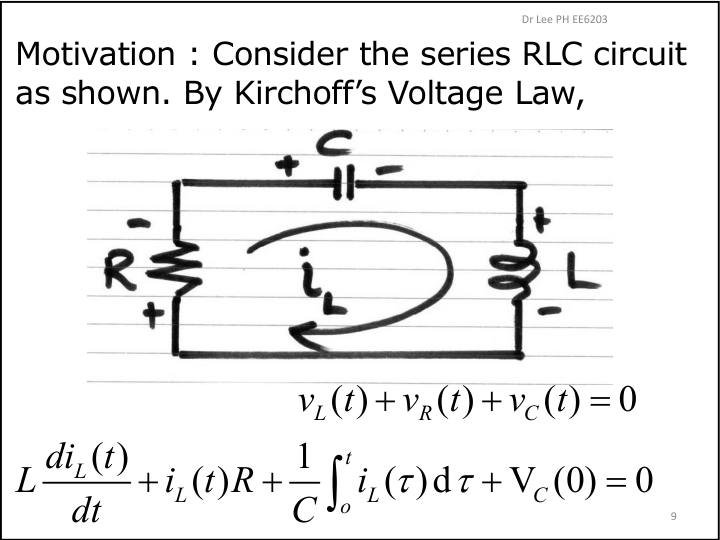
L and vC are the natural states." loading="lazy">Definition (slide 14). The state is a minimum set of internal variables \(x_1,\dots,x_n\). Knowing them at time \(t_0\), together with the input from \(t_0\) onwards, is enough to predict all future states and outputs.
Write the states as a column vector \(\mathbf x\). A linear time-invariant (LTI) system then has the form (1.1)–(1.2):
\[\dot{\mathbf x}(t)=\mathbf A\mathbf x(t)+\mathbf B u(t),\qquad y(t)=\mathbf C\mathbf x(t)+D u(t).\]Here \(\mathbf A\) is \(n\times n\) (the dynamics), \(\mathbf B\) is \(n\times r\) (how the inputs push the states), \(\mathbf C\) is \(m\times n\) (what you measure), and \(D\) is the direct feed-through. In this quiz everything is single-input single-output (\(r=m=1\)) and \(n=2\).
Why first-order equations? A second-order ODE becomes two first-order ones if you call the position one state and the velocity another. Newton's law \(M\ddot y=F\) (Example 1.1) with \(x_1=y,\;x_2=\dot y\) gives \(\dot x_1=x_2\) and \(\dot x_2=F/M\):
\[\dot{\mathbf x}=\begin{bmatrix}0&1\\0&0\end{bmatrix}\mathbf x+\begin{bmatrix}0\\1/M\end{bmatrix}F,\quad y=\begin{bmatrix}1&0\end{bmatrix}\mathbf x.\]1.2 Recipe A: ODE → state space
- Normalise: divide by the coefficient of the highest derivative so that \(\ddot y\) stands alone.
- Choose \(x_1=y,\;x_2=\dot y\). Then row 1 is always \(\dot x_1=x_2\).
- Row 2 is \(\dot x_2=\ddot y=\) (the normalised ODE solved for \(\ddot y\)).
Worked. \(2\ddot y+6\dot y+4y=8u\). Dividing by 2 gives \(\ddot y=-2y-3\dot y+4u\), so
\[\mathbf A=\begin{bmatrix}0&1\\-2&-3\end{bmatrix},\;\mathbf B=\begin{bmatrix}0\\4\end{bmatrix},\;\mathbf C=\begin{bmatrix}1&0\end{bmatrix},\;D=0.\]Pitfall. If you forget to normalise, every entry in row 2 is off by the leading coefficient. Also, the bottom row of \(\mathbf A\) holds the negated ODE coefficients.
Physical example from the slides: the servomotor (Example 1.2, slides 21–24). Motor torque \(K_Ti=J\ddot\theta+B\dot\theta\), back-emf \(e_m=K_b\dot\theta\), and armature KVL \(e=iR_a+e_m\) (neglecting \(L_a\)). Eliminating \(i\) with \(x_1=\theta,\;x_2=\dot\theta\) gives
\[\dot{\mathbf x}=\begin{bmatrix}0&1\\0&-\dfrac{BR_a+K_TK_b}{JR_a}\end{bmatrix}\mathbf x+\begin{bmatrix}0\\\dfrac{K_T}{JR_a}\end{bmatrix}e,\qquad y=\begin{bmatrix}1&0\end{bmatrix}\mathbf x.\]The servo used throughout the lecture has these numbers chosen so that \(\mathbf A=\begin{bmatrix}0&1\\0&-1\end{bmatrix},\;\mathbf B=\begin{bmatrix}0\\1\end{bmatrix}\) (Example 1.4).
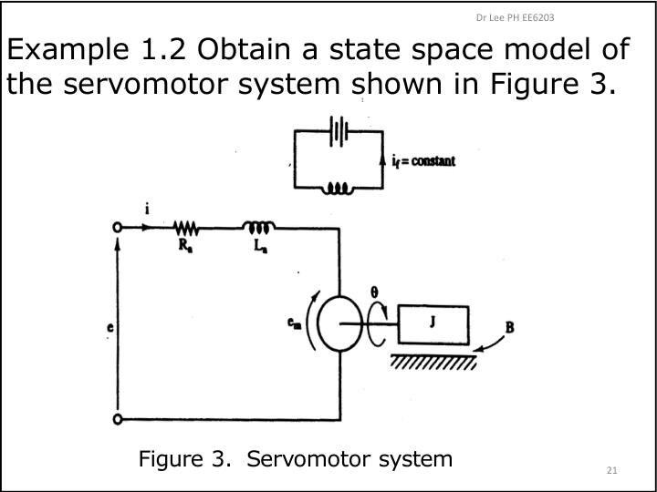
Check · ODE → state space
Take \(3\ddot y+12\dot y+9y=6u\) with \(x_1=y,\;x_2=\dot y\).
Find \(a_{21}\), the bottom-left entry of \(\mathbf A\).
Divide by 3 first.
Find \(a_{22}\).
This is the coefficient of \(\dot y=x_2\) after normalising.
Find \(b_2\), the bottom entry of \(\mathbf B\).
\(6/3\).
1.3 Recipe B: continuous block diagram → state space supplementary; past sittings asked this
This recipe is my addition, built on LPH's state definition. Past Quiz 2 sittings asked “find a state-space model from the block diagram” (intel file).
- Put a state at the output of every dynamic block (\(1/s\), \(k/(s+a)\)).
- A block \(\dfrac{k}{s+a}\) with input \(e\) and output \(x\) means \((s+a)X=kE\), which in the time domain is \(\dot x=-ax+ke\).
- A block \(1/s\) means \(\dot x=e\) (its input).
- Write each block's input from the summing junctions, in terms of states and \(u\), and substitute.
Worked. States: \(x_1\) = the output of \(1/s\) \(=y\), and \(x_2\) = the output of \(3/(s+4)\). The input to \(3/(s+4)\) is \(u-2x_1\). So
\[\dot x_1=x_2,\qquad \dot x_2=-4x_2+3(u-2x_1)=-6x_1-4x_2+3u,\] \[\mathbf A=\begin{bmatrix}0&1\\-6&-4\end{bmatrix},\;\mathbf B=\begin{bmatrix}0\\3\end{bmatrix},\;\mathbf C=\begin{bmatrix}1&0\end{bmatrix}.\]Sanity check: the block diagram's own closed-loop transfer function is \(\frac{3/(s(s+4))}{1+6/(s(s+4))}=\frac{3}{s^2+4s+6}\). The model's characteristic polynomial \(\det(s\mathbf I-\mathbf A)=s^2+4s+6\) matches.
1.4 Recipe C: discrete block diagram (delays) → state space Lect 3 Ex 3.5, slides 14–15
The discrete version is the same idea with \(z^{-1}\) (a one-sample delay) in place of \(1/s\). The output of each delay is a state \(x_i(k)\), and the signal entering that delay is \(x_i(k+1)\). In LPH's Example 3.5, the first delay has feedback \(-0.2\), so \(x_1(k+1)=-0.2x_1(k)\). The second junction adds \(x_1\) and \(u\) and subtracts \(0.5x_2\), so \(x_2(k+1)=x_1(k)-0.5x_2(k)+u(k)\), with \(y=x_2\).
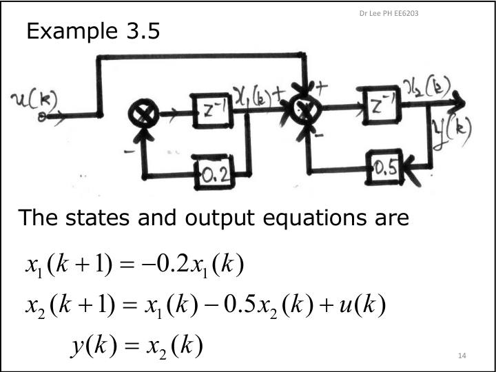
−1 output is a state." loading="lazy">1.5 From state space back to a transfer function Lect 1 §1.2, slides 18–20
Take Laplace transforms with \(\mathbf x(0)=\mathbf 0\): \(s\mathbf X=\mathbf A\mathbf X+\mathbf BU\), so \(\mathbf X=(s\mathbf I-\mathbf A)^{-1}\mathbf BU\). Therefore
\[\boxed{G(s)=\frac{Y(s)}{U(s)}=\mathbf C(s\mathbf I-\mathbf A)^{-1}\mathbf B+D=\frac{\mathbf C\,\operatorname{adj}(s\mathbf I-\mathbf A)\,\mathbf B}{\det(s\mathbf I-\mathbf A)}+D}\quad\textbf{MEMORISE}\]The denominator is \(\det(s\mathbf I-\mathbf A)\), so the poles are the eigenvalues of \(\mathbf A\). For the servo, this gives \(\Theta(s)/E(s)=\dfrac{K_T/JR_a}{s\,(s+(BR_a+K_TK_b)/JR_a)}\) (slide 24).
Check · diagrams and transfer functions
Discrete diagram above (with 0.5 and 0.25): find \(a_{22}\) in \(\mathbf x(k+1)=\mathbf A\mathbf x(k)+\mathbf Bu(k)\).
The input to the second delay is \(x_1(k)-0.25x_2(k)\).
Replace the feedback gain 2 in the continuous diagram by 3 and the block \(3/(s+4)\) by \(2/(s+5)\). Find \(a_{21}\).
\(\dot x_2=-5x_2+2(u-3x_1)\).
For \(\mathbf A=\begin{bmatrix}0&1\\-2&-3\end{bmatrix},\mathbf B=\begin{bmatrix}0\\2\end{bmatrix},\mathbf C=[1\;0]\), evaluate the DC gain \(G(0)\).
\(G(s)=\mathbf C(s\mathbf I-\mathbf A)^{-1}\mathbf B\). Here \(\det(s\mathbf I-\mathbf A)=s^2+3s+2\).
Same system: what is the more negative pole?
Poles are the eigenvalues of \(\mathbf A\).
2 · The state transition matrix \(\mathbf\Phi(t)\) Lect 1 §1.3, slides 25–30
Before discretising, you need the continuous solution. Transform \(\dot{\mathbf x}=\mathbf A\mathbf x+\mathbf Bu\) keeping the initial state: \(s\mathbf X-\mathbf x(0)=\mathbf A\mathbf X+\mathbf BU\), so
\[\mathbf X(s)=(s\mathbf I-\mathbf A)^{-1}\mathbf x(0)+(s\mathbf I-\mathbf A)^{-1}\mathbf BU(s).\]The first term is the free response, the second the forced response. Inverting gives
\[\boxed{\mathbf\Phi(t)=\mathcal L^{-1}\{(s\mathbf I-\mathbf A)^{-1}\}=e^{\mathbf At}}\quad\textbf{MEMORISE}\] \[\mathbf x(t)=\mathbf\Phi(t-t_0)\mathbf x(t_0)+\int_{t_0}^{t}\mathbf\Phi(t-\tau)\mathbf Bu(\tau)\,d\tau \quad(1.21).\]The integral is a convolution: the forced part “remembers” each past input pushed through \(\mathbf\Phi\).
Properties (slide 27): \(\mathbf\Phi(0)=\mathbf I\); \(\mathbf\Phi^{-1}(t)=\mathbf\Phi(-t)\); \(\mathbf\Phi(t_2-t_1)\mathbf\Phi(t_1-t_0)=\mathbf\Phi(t_2-t_0)\); \(\mathbf\Phi(t)^k=\mathbf\Phi(kt)\).
Worked: \(\mathbf A=\begin{bmatrix}0&1\\0&-2\end{bmatrix}\)
Step 1: form \(s\mathbf I-\mathbf A\) and invert
\[s\mathbf I-\mathbf A=\begin{bmatrix}s&-1\\0&s+2\end{bmatrix},\quad\det=s(s+2),\quad (s\mathbf I-\mathbf A)^{-1}=\begin{bmatrix}\frac1s&\frac1{s(s+2)}\\0&\frac1{s+2}\end{bmatrix}.\] Why the 2×2 rule: swap the diagonal to \(s+2,\,s\), negate the off-diagonal \(-1\to+1\), and divide by \(s(s+2)\).Step 2: invert entry by entry (partial fractions)
\(\frac1{s(s+2)}=\frac12\left(\frac1s-\frac1{s+2}\right)\to\frac12(1-e^{-2t})\). The other entries come straight from the table: \(1/s\to1\), \(1/(s+2)\to e^{-2t}\). \[\mathbf\Phi(t)=\begin{bmatrix}1&\tfrac12(1-e^{-2t})\\0&e^{-2t}\end{bmatrix}.\] Check: at \(t=0\) this is \(\mathbf I\). ✓The lecture's servo (\(\mathbf A=\begin{bmatrix}0&1\\0&-1\end{bmatrix}\)) gives \(\mathbf\Phi(t)=\begin{bmatrix}1&1-e^{-t}\\0&e^{-t}\end{bmatrix}\) the same way (slide 39).
Check · \(\mathbf\Phi(t)\)
\(\mathbf A=\begin{bmatrix}-1&0\\0&-3\end{bmatrix}\). Find \(\Phi_{22}(0.5)\) to 4 significant figures.
For a diagonal \(\mathbf A\), \(\mathbf\Phi=\operatorname{diag}(e^{-t},e^{-3t})\).
For the double integrator \(\mathbf A=\begin{bmatrix}0&1\\0&0\end{bmatrix}\), find \(\Phi_{12}(2)\).
\((s\mathbf I-\mathbf A)^{-1}=\begin{bmatrix}1/s&1/s^2\\0&1/s\end{bmatrix}\).
For the worked \(\mathbf A=\begin{bmatrix}0&1\\0&-2\end{bmatrix}\), find \(\Phi_{12}(1)\).
\(\tfrac12(1-e^{-2t})\).
Which expression equals \(\mathbf\Phi^{-1}(t)\)?
- \(\mathbf\Phi(t)^{\mathsf T}\)
- \(\mathbf\Phi(-t)\)
- \(-\mathbf\Phi(t)\)
\(e^{\mathbf At}e^{-\mathbf At}=\mathbf I\).
3 · Discretising with a zero-order hold Lect 1 §2, slides 31–40 + slide-40 note
A computer sends \(u(kT)\) every \(T\) seconds, and the zero-order hold (ZOH) keeps it constant until the next sample. Our goal is a model that jumps straight from \(\mathbf x(kT)\) to \(\mathbf x((k+1)T)\).
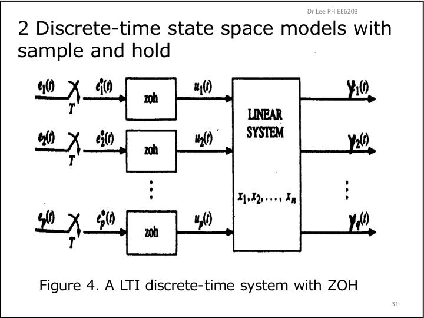
Derivation (why the formula looks the way it does)
Step 1: apply (1.21) over one sampling interval
Set \(t_0=kT\) and \(t=(k+1)T\): \[\mathbf x((k+1)T)=\mathbf\Phi(T)\mathbf x(kT)+\int_{kT}^{(k+1)T}\mathbf\Phi((k+1)T-\tau)\mathbf B\,u(\tau)\,d\tau.\]Step 2: use the hold, \(u(\tau)=u(kT)\) on the interval
Because the input is constant, it comes out of the integral: \(\left[\int_{kT}^{(k+1)T}\mathbf\Phi((k+1)T-\tau)\,d\tau\,\mathbf B\right]u(kT)\). Without the ZOH this step would fail. That is the whole reason a hold gives an exact discrete model.Step 3: substitute \(\lambda=(k+1)T-\tau\)
As \(\tau\) runs from \(kT\) to \((k+1)T\), \(\lambda\) runs from \(T\) down to 0, and \(d\lambda=-d\tau\), which flips the limits back. The \(k\) disappears: \[\mathbf\Theta(T)=\int_0^T\mathbf\Phi(\lambda)\,d\lambda\;\mathbf B.\]\(\mathbf C\) and \(D\) do not change. Following LPH, after discretising we drop the “\(T\)” and write \(\mathbf x(k)\).
Pitfalls. (1) Integrate \(\mathbf\Phi(\tau)\) first, then multiply by \(\mathbf B\). In practice it is fastest to multiply first (\(\mathbf\Phi(\tau)\mathbf B\) is a column) and then integrate that column; both give the same result. (2) \(\mathbf\Theta\ne\mathbf BT\). That is only the small-\(T\) approximation.
Lecture example: the servo, \(T=0.1\) s Example 1.4, slides 38–40
\(\mathbf\Phi(t)\mathbf B=\begin{bmatrix}1-e^{-t}\\e^{-t}\end{bmatrix}\). Integrating from 0 to \(T\) gives \(\begin{bmatrix}T+e^{-T}-1\\1-e^{-T}\end{bmatrix}\) (LPH's handwritten slide-40 note). At \(T=0.1\):
\[\mathbf x(k+1)=\begin{bmatrix}1&0.0952\\0&0.905\end{bmatrix}\mathbf x(k)+\begin{bmatrix}0.00484\\0.0952\end{bmatrix}u(k),\qquad y(k)=[1\;\;0]\,\mathbf x(k).\]Modules 9 and 10 reuse this model.
Worked: \(\mathbf A=\begin{bmatrix}0&1\\0&-2\end{bmatrix},\;\mathbf B=\begin{bmatrix}0\\2\end{bmatrix},\;T=0.5\)
Step 1: \(\mathbf\Phi(T)\)
From Module 2, \(\mathbf\Phi(0.5)=\begin{bmatrix}1&\tfrac12(1-e^{-1})\\0&e^{-1}\end{bmatrix}=\begin{bmatrix}1&0.3161\\0&0.3679\end{bmatrix}\).Step 2: \(\mathbf\Phi(\tau)\mathbf B\), then integrate
\(\mathbf\Phi(\tau)\mathbf B=\begin{bmatrix}1-e^{-2\tau}\\2e^{-2\tau}\end{bmatrix}\), so \(\mathbf\Theta(T)=\begin{bmatrix}T-\tfrac12(1-e^{-2T})\\1-e^{-2T}\end{bmatrix}=\begin{bmatrix}0.1839\\0.6321\end{bmatrix}\) at \(T=0.5\).Step 3: sanity checks
For small \(T\), \(\mathbf\Theta\approx\mathbf BT=[0,\;1]^{\mathsf T}\). Our second entry, 0.632, is below 1 because the \(-2\) pole leaks state away during the interval. The first entry is positive because \(x_2\) feeds \(x_1\). ✓Lecture example: double integrator Example 1.6, slides 48–50
\(\mathbf\Phi(T)=\begin{bmatrix}1&T\\0&1\end{bmatrix}\) and \(\mathbf\Theta(T)=\int_0^T\begin{bmatrix}\tau\\1\end{bmatrix}d\tau=\begin{bmatrix}T^2/2\\T\end{bmatrix}\). Memorise this one: it reappears in the deadbeat example.
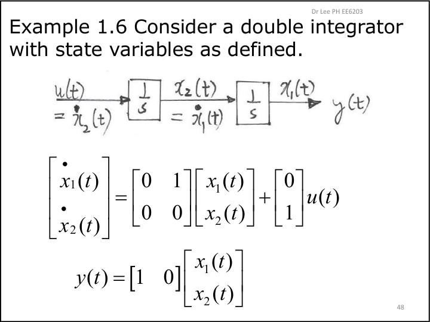
Check · ZOH discretisation
Discretise \(\mathbf A=\begin{bmatrix}0&1\\0&-1\end{bmatrix},\;\mathbf B=\begin{bmatrix}0\\1\end{bmatrix}\) (the servo) with \(T=0.2\). Give 4 significant figures.
\(\Phi_{12}(T)\)
\(1-e^{-T}\).
\(\Phi_{22}(T)\)
\(e^{-T}\).
\(\Theta_1(T)\)
\(T+e^{-T}-1\).
\(\Theta_2(T)\)
\(1-e^{-T}\).
For the double integrator with \(T=0.5\), find \(\Theta_1\).
\(T^2/2\).
4 · Discrete transfer function, poles and zeros Lect 1 §3, slides 41–52
Exactly as in continuous time, take z-transforms of \(\mathbf x(k+1)=\mathbf A\mathbf x(k)+\mathbf Bu(k)\) with \(\mathbf x(0)=\mathbf 0\): \(z\mathbf X=\mathbf A\mathbf X+\mathbf BU\). (From here on, \(\mathbf A,\mathbf B\) mean the discrete matrices \(\mathbf\Phi,\mathbf\Theta\).)
\[\boxed{G(z)=\frac{Y(z)}{U(z)}=\mathbf C(z\mathbf I-\mathbf A)^{-1}\mathbf B+D}\quad\textbf{MEMORISE}\]- Poles (§3.1): values of \(z\) where the unforced system has a non-trivial solution, \(\det(z\mathbf I-\mathbf A)=0\). They are the eigenvalues of \(\mathbf A\). Stable means \(|z|\lt1\).
- Zeros (§3.2): values \(z_0\) at which a non-zero state/input combination gives zero output. Stacking the state and output equations gives \[\det\begin{bmatrix}z_0\mathbf I-\mathbf A&-\mathbf B\\\mathbf C&D\end{bmatrix}=0.\] For SISO with no cancellation, this is just the numerator of \(G(z)\).
Lecture example 1.5
\(\mathbf A=\begin{bmatrix}1.35&0.55\\-0.45&0.35\end{bmatrix},\;\mathbf B=\begin{bmatrix}0.5\\0.5\end{bmatrix},\;\mathbf C=[1\;\,-1]\). Then \(\det(z\mathbf I-\mathbf A)=z^2-1.7z+0.72=(z-0.9)(z-0.8)\), and \(G(z)=\dfrac{1}{z^2-1.7z+0.72}\): poles at 0.9 and 0.8, and no finite zeros.
Lecture example 1.6: the double integrator after ZOH
\(G(z)=\dfrac{T^2}{2}\dfrac{z+1}{(z-1)^2}\). Sampling created a zero at \(z=-1\) that the continuous \(1/s^2\) never had. Zeros are not mapped by \(z=e^{sT}\); only poles are.
Worked: the Module 3 system (\(T=0.5\))
Show the transfer function
\[(z\mathbf I-\mathbf A)^{-1}=\dfrac{1}{(z-1)(z-0.3679)}\begin{bmatrix}z-0.3679&0.3161\\0&z-1\end{bmatrix}.\] Multiplying by \(\mathbf C=[1\;0]\) on the left and \(\mathbf\Theta\) on the right: \[G(z)=\frac{0.1839(z-0.3679)+0.3161\cdot0.6321}{(z-1)(z-0.3679)}=\frac{0.1839\,(z+0.7183)}{(z-1)(z-0.3679)}.\] Poles \(1,\;e^{-1}\) are the images \(e^{sT}\) of \(s=0,-2\). The zero is \(-0.718\).Check · poles and zeros
\(\mathbf A=\begin{bmatrix}0.5&1\\0&0.2\end{bmatrix}\). What is the larger pole?
The matrix is triangular.
\(\mathbf A=\begin{bmatrix}0&1\\-0.5&1\end{bmatrix}\). Find the pole magnitude \(|z|\).
\(z^2-z+0.5=0\). For complex poles, \(|z|^2=\) the constant term.
Same \(\mathbf A\) with \(\mathbf B=[0\;1]^{\mathsf T},\;\mathbf C=[1\;0]\). Find the DC gain \(G(1)\).
Show \(G(z)=1/(z^2-z+0.5)\) first.
In the worked example above, give the exact zero (it equals \(2-e\)) to 4 significant figures.
\(2-2.71828\).
Where is the zero of the ZOH double integrator?
Look at its numerator.
5 · Solving the discrete state equation by recursion Lect 1 §4, slides 53–56
The simplest solution method is to iterate: \(\mathbf x(1)=\mathbf A\mathbf x(0)+\mathbf Bu(0)\), then \(\mathbf x(2)=\mathbf A\mathbf x(1)+\mathbf Bu(1)=\mathbf A^2\mathbf x(0)+\mathbf{AB}u(0)+\mathbf Bu(1)\), and so on. The pattern is
\[\boxed{\mathbf x(k)=\mathbf A^k\mathbf x(0)+\sum_{i=0}^{k-1}\mathbf A^{k-1-i}\mathbf B\,u(i)}\quad(4.3)\quad\textbf{MEMORISE}\]The oldest input, \(u(0)\), has passed through \(\mathbf A\) the most times. In the quiz, just iterate step by step: it is quicker and less error-prone than forming powers of \(\mathbf A\).
Worked
\(\mathbf A=\begin{bmatrix}0&1\\-0.5&1\end{bmatrix}\), \(\mathbf B=\begin{bmatrix}0\\1\end{bmatrix}\), \(\mathbf x(0)=\begin{bmatrix}1\\0\end{bmatrix}\), \(u(0)=2\), \(u(1)=-1\).
\(k=0\to1\)
\(\mathbf A\mathbf x(0)=\begin{bmatrix}0\\-0.5\end{bmatrix}\). Add \(\mathbf Bu(0)=\begin{bmatrix}0\\2\end{bmatrix}\) to get \(\mathbf x(1)=\begin{bmatrix}0\\1.5\end{bmatrix}\).\(k=1\to2\)
\(\mathbf A\mathbf x(1)=\begin{bmatrix}1.5\\1.5\end{bmatrix}\). Add \(\mathbf Bu(1)=\begin{bmatrix}0\\-1\end{bmatrix}\) to get \(\mathbf x(2)=\begin{bmatrix}1.5\\0.5\end{bmatrix}\), so \(y(2)=\mathbf C\mathbf x(2)=1.5\) for \(\mathbf C=[1\;0]\).Pitfall. Use the right input at each step: \(u(k)\) drives the step from \(k\) to \(k+1\). The input \(u(2)\) does not affect \(\mathbf x(2)\).
Check · iterate
\(\mathbf A=\begin{bmatrix}0.5&1\\0&-0.5\end{bmatrix}\), \(\mathbf B=\begin{bmatrix}1\\0\end{bmatrix}\), \(\mathbf x(0)=\begin{bmatrix}1\\2\end{bmatrix}\), \(u(0)=1\), \(u(1)=0\).
\(x_1(1)\)
\(0.5\cdot1+1\cdot2+1\cdot u(0)\).
\(x_1(2)\)
Use \(\mathbf x(1)=[3.5,\,-1]^{\mathsf T}\) and \(u(1)=0\).
\(x_2(2)\)
\(-0.5\,x_2(1)\).
In \(\mathbf x(3)\), the input \(u(0)\) is multiplied by:
- \(\mathbf A^2\mathbf B\)
- \(\mathbf A^3\mathbf B\)
- \(\mathbf B\)
\(\mathbf A^{k-1-i}\) with \(k=3,i=0\).
6 · Similarity transformations and canonical forms Lect 2 §5–6, slides 2–20
6.1 Same system, different states
Many state vectors describe the same physical system. Introduce new states \(\mathbf w\) through a constant non-singular \(\mathbf P\): \(\mathbf x=\mathbf P\mathbf w\) (5.3). Substituting into \(\mathbf x(k+1)=\mathbf A\mathbf x+\mathbf Bu\) and multiplying by \(\mathbf P^{-1}\) gives
\[\mathbf A_w=\mathbf P^{-1}\mathbf A\mathbf P,\quad\mathbf B_w=\mathbf P^{-1}\mathbf B,\quad\mathbf C_w=\mathbf C\mathbf P,\quad d_w=d.\]Invariants: the characteristic polynomial (so the poles) and the transfer function. Proof: \(\det(z\mathbf I-\mathbf P^{-1}\mathbf A\mathbf P)=\det(\mathbf P^{-1}(z\mathbf I-\mathbf A)\mathbf P)=\det(z\mathbf I-\mathbf A)\).
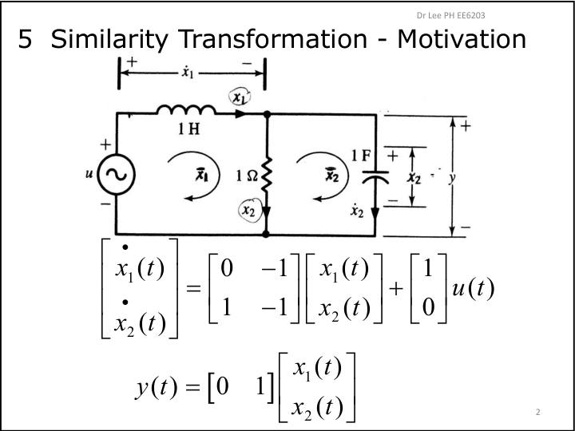
6.2 Controllable canonical form (CCF) and observable canonical form (OCF)
Write the characteristic polynomial as \(z^n+a_{n-1}z^{n-1}+\dots+a_1z+a_0\) (6.3). For \(n=2\):
\[\textbf{CCF: }\mathbf A_C=\begin{bmatrix}0&1\\-a_0&-a_1\end{bmatrix},\;\mathbf B_C=\begin{bmatrix}0\\1\end{bmatrix};\qquad \textbf{OCF: }\mathbf A_O=\begin{bmatrix}0&-a_0\\1&-a_1\end{bmatrix}=\mathbf A_C^{\mathsf T},\;\mathbf C_O=[0\;\;1].\]In the CCF, the last row holds the negated coefficients and \(\mathbf B\) is \([0\cdots0\;1]^{\mathsf T}\). That structure is what makes pole placement easy (Module 9).
Transformation to CCF (6.10), provided the controllability matrix \(\mathbf W_C\) (Module 7) is non-singular:
\[\mathbf x=\mathbf P\mathbf w,\qquad \mathbf P=\mathbf W_C\,\tilde{\mathbf W}_C^{-1},\]where \(\tilde{\mathbf W}_C=[\mathbf B_C\;\;\mathbf A_C\mathbf B_C]\) is the controllability matrix of the CCF. Why: \(\mathbf W_C\) transforms as \(\tilde{\mathbf W}_C=\mathbf P^{-1}\mathbf W_C\). For the OCF, \(\mathbf w=\mathbf Q\mathbf x\) with \(\mathbf Q=\tilde{\mathbf W}_O^{-1}\mathbf W_O\) (6.15).
Worked (Example 2.1): \(\mathbf A=\operatorname{diag}(0.5,0.8),\;\mathbf B=[1\;1]^{\mathsf T}\)
\(\det(z\mathbf I-\mathbf A)=z^2-1.3z+0.4\), so \(a_1=-1.3,\;a_0=0.4\). \(\mathbf W_C=[\mathbf B\;\mathbf{AB}]=\begin{bmatrix}1&0.5\\1&0.8\end{bmatrix}\). In the CCF, \(\mathbf A_C\mathbf B_C=[1\;\;1.3]^{\mathsf T}\), so \(\tilde{\mathbf W}_C=\begin{bmatrix}0&1\\1&1.3\end{bmatrix}\) and \(\tilde{\mathbf W}_C^{-1}=\begin{bmatrix}-1.3&1\\1&0\end{bmatrix}\). \[\mathbf P=\begin{bmatrix}1&0.5\\1&0.8\end{bmatrix}\begin{bmatrix}-1.3&1\\1&0\end{bmatrix}=\begin{bmatrix}-0.8&1\\-0.5&1\end{bmatrix}.\] Check: \(\mathbf P^{-1}\mathbf B=[0\;1]^{\mathsf T}\) ✓, and \(\mathbf P^{-1}\mathbf A\mathbf P=\begin{bmatrix}0&1\\-0.4&1.3\end{bmatrix}\) ✓.6.3 Writing the CCF/OCF straight from a transfer function (by inspection)
For a strictly proper \(G(z)=\dfrac{b_{n-1}z^{n-1}+\dots+b_1z+b_0}{z^n+a_{n-1}z^{n-1}+\dots+a_0}\):
\[\mathbf C_C=[b_0\;\;b_1\;\cdots\;b_{n-1}],\qquad \mathbf B_O=[b_0\;\;b_1\;\cdots\;b_{n-1}]^{\mathsf T}.\]If the numerator has the same degree as the denominator, first divide: \(G=d+\)(strictly proper remainder). Example 2.2: \(\frac{-2z^3+2z^2-z+2}{z^3+z^2-z-3/4}=-2+\frac{4z^2-3z+1/2}{z^3+z^2-z-3/4}\), so \(d_C=-2\), \(\mathbf C_C=[\tfrac12\;\;-3\;\;4]\), and the last row of \(\mathbf A_C\) is \([\tfrac34\;\;1\;\;-1]\).
Pitfall. The order is reversed relative to how you read the polynomial. \(\mathbf C_C\) starts with \(b_0\) (the constant term), and the last row of \(\mathbf A_C\) starts with \(-a_0\).
Check · canonical forms
\(G(z)=\dfrac{3z-1}{z^2+0.4z-0.12}\), in CCF.
Bottom-left entry of \(\mathbf A_C\)
\(-a_0\), with \(a_0=-0.12\).
Bottom-right entry of \(\mathbf A_C\)
\(-a_1\).
First entry of \(\mathbf C_C\)
\(b_0\) is the numerator's constant term.
\(G(z)=\dfrac{z^2+2}{z^2-z+0.5}\): after dividing, find \(b_0\) of the remainder (with \(d=1\)).
\(z^2+2-(z^2-z+0.5)=z+1.5\).
\(\mathbf A=\operatorname{diag}(0.2,0.6),\;\mathbf B=[1\;1]^{\mathsf T}\). Find \(P_{11}\) of \(\mathbf P=\mathbf W_C\tilde{\mathbf W}_C^{-1}\).
\(a_1=-0.8\). For \(n=2\), \(\tilde{\mathbf W}_C^{-1}=\begin{bmatrix}a_1&1\\1&0\end{bmatrix}\).
Which is not invariant under a similarity transformation?
- the poles
- the matrix \(\mathbf B\)
- the transfer function
\(\mathbf B_w=\mathbf P^{-1}\mathbf B\).
7 · Controllability Lect 2 §7–8, slides 21–39
LPH's design plan (§7): (1) design state feedback \(u=-\mathbf K\mathbf x\), assuming all states are measured; (2) if they are not, design an observer to estimate them. By the separation principle the two designs are independent. Quiz 2 covers step 1. Before designing, ask whether the input can steer the state at all.
Where the test comes from
From (4.3) with \(N=n\) steps:
\[\mathbf x(n)-\mathbf A^n\mathbf x(0)=\underbrace{[\mathbf B\;\;\mathbf{AB}\;\cdots\;\mathbf A^{n-1}\mathbf B]}_{\mathbf W_C}\begin{bmatrix}u(n-1)\\u(n-2)\\\vdots\\u(0)\end{bmatrix}.\]This is \(n\) equations in \(n\) unknown inputs. You can hit any target exactly when \(\mathbf W_C\) is invertible.
Theorem. \((\mathbf A,\mathbf B)\) is controllable \(\iff\) \(\operatorname{rank}\mathbf W_C=n\), where \(\mathbf W_C=[\mathbf B\;\;\mathbf{AB}\;\cdots\;\mathbf A^{n-1}\mathbf B]\). For SISO, this means \(\det\mathbf W_C\ne0\). MEMORISE
Pitfall. The unknown vector is in reverse time order, \([u(1);u(0)]\) for \(n=2\). If you write it the other way, you swap the answers.
Physical meaning Examples 2.5, 2.9
In a balanced bridge (Example 2.9: \(\frac{R_3}{R_3+R_4}=\frac{R_2}{R_1+R_2}\), i.e. \(R_1R_3=R_2R_4\)), the capacitor voltage cannot be moved by the source at all, and \(\det\mathbf W_C=0\). Uncontrollable means part of the state is unreachable from the input.
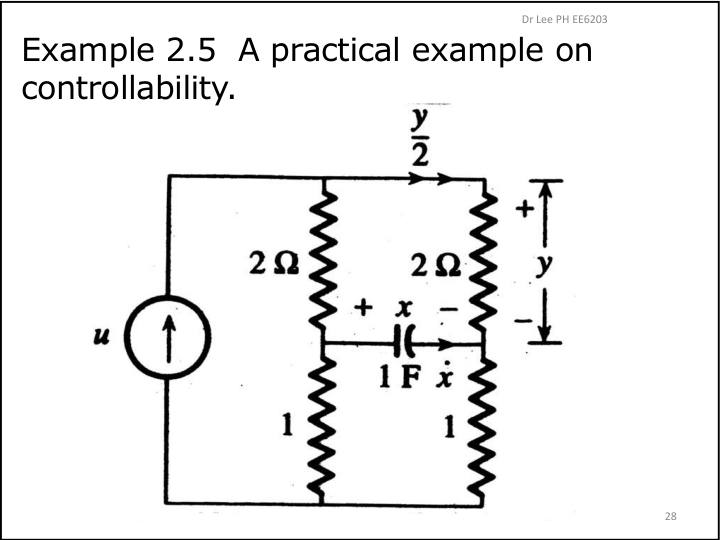
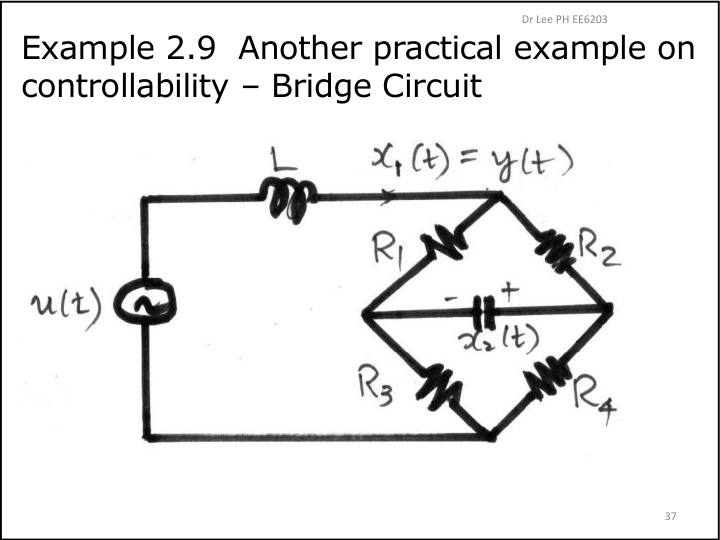
Worked: steer from the origin to a target
\(\mathbf A=\begin{bmatrix}1&1\\0&1\end{bmatrix},\;\mathbf B=\begin{bmatrix}0\\1\end{bmatrix}\). Reach \(\mathbf x(2)=[2\;\;1]^{\mathsf T}\) from \(\mathbf 0\).
Solve
\(\mathbf{AB}=[1\;1]^{\mathsf T}\), so \(\mathbf W_C=\begin{bmatrix}0&1\\1&1\end{bmatrix}\) with \(\det=-1\ne0\): controllable. \(\mathbf x(2)=\mathbf{AB}\,u(0)+\mathbf B\,u(1)\) gives \(2=u(0)\) and \(1=u(0)+u(1)\). So \(u(0)=2,\;u(1)=-1\). Verify by iterating: \(\mathbf x(1)=[0\;2]^{\mathsf T}\), then \(\mathbf x(2)=[2\;\;1]^{\mathsf T}\) ✓.Worked: a parameter that kills controllability (past-quiz style)
\(\mathbf A=\begin{bmatrix}a&1\\0&0.5\end{bmatrix},\;\mathbf B=\begin{bmatrix}1\\1\end{bmatrix}\). \(\mathbf{AB}=\begin{bmatrix}a+1\\0.5\end{bmatrix}\), so \(\det\mathbf W_C=\det\begin{bmatrix}1&a+1\\1&0.5\end{bmatrix}=0.5-(a+1)=-(a+0.5)\). The system is controllable for every \(a\neq-0.5\).
Check · controllability
\(\mathbf A=\begin{bmatrix}0.5&0\\0&0.5\end{bmatrix},\;\mathbf B=\begin{bmatrix}1\\2\end{bmatrix}\). What is \(\operatorname{rank}\mathbf W_C\)?
\(\mathbf{AB}=0.5\mathbf B\).
\(\mathbf A=\begin{bmatrix}0&1\\-0.5&1\end{bmatrix},\;\mathbf B=\begin{bmatrix}0\\1\end{bmatrix}\). Reach \(\mathbf x(2)=[1\;\;0]^{\mathsf T}\) from \(\mathbf 0\). Find \(u(0)\).
\(\mathbf{AB}=[1\;\;1]^{\mathsf T}\). Write \(\mathbf x(2)=\mathbf{AB}u(0)+\mathbf Bu(1)\).
Same problem: find \(u(1)\).
Second row: \(0=u(0)+u(1)\).
\(\mathbf A=\begin{bmatrix}0.2&\beta\\0&0.6\end{bmatrix},\;\mathbf B=\begin{bmatrix}1\\1\end{bmatrix}\). For which \(\beta\) is the system uncontrollable?
\(\mathbf{AB}=[0.2+\beta\;\;0.6]^{\mathsf T}\).
8 · Observability, pole-zero cancellation, and loss by sampling Lect 3 §9–10, slides 2–19
Observability is the mirror question: can the initial state be worked out from the measured outputs (and known inputs)? With \(u=0\), \(y(k)=\mathbf C\mathbf A^k\mathbf x(0)\), so stacking \(n\) outputs gives
\[\begin{bmatrix}y(0)\\y(1)\\\vdots\\y(n-1)\end{bmatrix}=\underbrace{\begin{bmatrix}\mathbf C\\\mathbf{CA}\\\vdots\\\mathbf{CA}^{n-1}\end{bmatrix}}_{\mathbf W_O}\mathbf x(0)\quad(9.3).\]Theorem. \((\mathbf A,\mathbf C)\) is observable \(\iff\operatorname{rank}\mathbf W_O=n\). MEMORISE \(\mathbf W_O\) stacks rows, while \(\mathbf W_C\) places columns side by side.
LPH's physical example (3.1): an LC loop measured by a quantity it never touches. The loop can ring while the output stays 0, so it is unobservable. If you measure \(x_2\) instead, it becomes observable: both properties depend on what you call the input and the output.
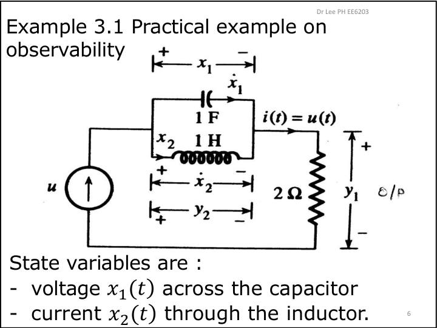
Worked: find \(\mathbf x(0)\)
\(\mathbf A=\begin{bmatrix}1&1\\0&2\end{bmatrix},\;\mathbf C=[1\;0],\;u=0,\;y(0)=1,\;y(1)=2\).
Solve
\(\mathbf{CA}=[1\;\;1]\), so \(\mathbf W_O=\begin{bmatrix}1&0\\1&1\end{bmatrix}\) with \(\det=1\): observable. Then \(y(0)=x_1(0)=1\) and \(y(1)=x_1(0)+x_2(0)=2\), so \(\mathbf x(0)=[1\;\;1]^{\mathsf T}\). LPH (26 Sep): “we don't need to remember the formula, we can solve this using the output equation”, i.e. just write \(y(k)=\mathbf C\mathbf x(k)\) row by row. If \(u(0)\ne0\), then \(y(1)=\mathbf C(\mathbf A\mathbf x(0)+\mathbf Bu(0))\): subtract the known \(\mathbf{CB}u(0)\).Pole-zero cancellation §10.1, Examples 3.4–3.5
Theorem. (I) If \(G(z)\) has a pole-zero cancellation, the realisation is uncontrollable, unobservable, or both, depending on how the states are chosen. (II) With no cancellation, there is always a controllable and observable realisation.
Example 3.4: \(G(z)=\dfrac{z+0.2}{(z+0.8)(z+0.2)}\). Realised in CCF it is controllable but unobservable: \(\mathbf W_O=\begin{bmatrix}0.2&1\\-0.16&-0.8\end{bmatrix}\), \(\det=0\). Realised in OCF it is observable but uncontrollable. This is no accident: the CCF is always controllable by construction, and the OCF always observable.
Example 3.5 (the delay diagram from Module 1): \(\mathbf W_C=\begin{bmatrix}0&0\\1&-0.5\end{bmatrix}\) is singular, and \(G=\frac{z+0.2}{(z+0.2)(z+0.5)}\) cancels. The \(x_1\) mode is never excited by \(u\).
Loss of controllability/observability by sampling §10.2, Examples 3.6–3.7
Discretisation can only lose these properties, never create them: a controllable discrete model requires a controllable continuous one. Example 3.6, the harmonic oscillator \(\omega^2/(s^2+\omega^2)\), has ZOH matrices containing \(\cos\omega T,\sin\omega T\). Both \(\mathbf W_C\) and \(\mathbf W_O\) become singular when \(\mathbf{\omega T=k\pi}\) (\(k\) an integer). Intuition: sampling every half-period sees the oscillation at the same phase, so the samples cannot tell where it is. Example 3.7 (the ZOH double integrator, \(\mathbf W_O=\begin{bmatrix}1&0\\1&T\end{bmatrix}\), \(\det\mathbf W_O=T\)) stays observable for every \(T>0\): it has no oscillatory mode to alias. Slide 18 gives \(\det\mathbf W_C=-\sin\omega T(1-\cos\omega T)\) and \(\det\mathbf W_O=\sin\omega T\) for the oscillator; both vanish at \(\omega T=q\pi\).
Check · observability
\(\mathbf A=\begin{bmatrix}0.5&1\\0&0.25\end{bmatrix},\;\mathbf C=[0\;\;1]\). This pair is:
- observable
- not observable
\(\mathbf{CA}=[0\;\;0.25]\).
\(\mathbf A=\begin{bmatrix}0&1\\-0.5&1\end{bmatrix},\;\mathbf B=\begin{bmatrix}1\\0\end{bmatrix},\;\mathbf C=[1\;0]\), \(u(0)=1\), \(y(0)=2\), \(y(1)=-1\). Find \(x_2(0)\).
\(y(1)=\mathbf C\mathbf A\mathbf x(0)+\mathbf{CB}u(0)=x_2(0)+1\).
Harmonic oscillator with \(\omega=2\) rad/s. What is the smallest \(T>0\) that destroys controllability of the ZOH model?
\(\omega T=\pi\).
\(G(z)=\dfrac{z-0.5}{(z-0.5)(z+0.3)}\) realised in CCF is:
- controllable, not observable
- observable, not controllable
- both
The CCF is always controllable, and there is a cancellation.
9 · State feedback by pole placement, and Ackermann's formula Lect 3 §11–12, slides 20–44
Feed back the state: \(u(k)=-\mathbf K\mathbf x(k)\) with \(\mathbf K=[k_1\;k_2\;\cdots\;k_n]\) (11.1). This is a regulator, since the reference is 0. The closed loop is
\[\mathbf x(k+1)=(\mathbf A-\mathbf B\mathbf K)\mathbf x(k)\quad(11.2),\qquad \text{characteristic polynomial } \det(z\mathbf I-\mathbf A+\mathbf B\mathbf K).\]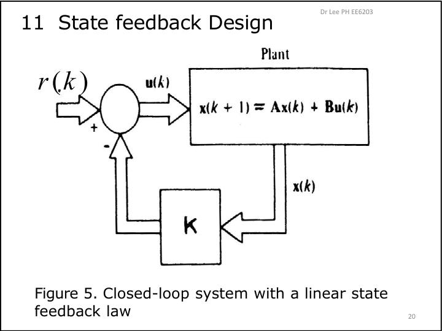
Choose the desired poles \(p_1,\dots,p_n\), form \(\alpha_C(z)=(z-p_1)\cdots(z-p_n)=z^n+\alpha_{n-1}z^{n-1}+\dots+\alpha_0\) (11.5), and make the two polynomials equal. The poles can be placed anywhere \(\iff(\mathbf A,\mathbf B)\) is controllable.
Method 1: match coefficients
Expand \(\det(z\mathbf I-\mathbf A+\mathbf B\mathbf K)\) with symbols \(k_1,k_2\), then equate the coefficients of \(z^1\) and \(z^0\). This gives two linear equations.
Shortcut in CCF (11.14): \(\mathbf A_C-\mathbf B_C\mathbf K\) only changes the last row, to \([-(a_0+k_1)\;\;-(a_1+k_2)\;\cdots]\). Hence \(k_{i+1}=\alpha_i-a_i\).
Worked (CCF): \(\mathbf A=\begin{bmatrix}0&1\\-0.5&1.5\end{bmatrix},\;\mathbf B=\begin{bmatrix}0\\1\end{bmatrix}\), poles at 0.2 and 0.3
Plant: \(z^2-1.5z+0.5\), so \(a_1=-1.5,\;a_0=0.5\). Desired: \((z-0.2)(z-0.3)=z^2-0.5z+0.06\), so \(\alpha_1=-0.5,\;\alpha_0=0.06\). \(k_1=\alpha_0-a_0=0.06-0.5=-0.44\) and \(k_2=\alpha_1-a_1=-0.5+1.5=1\), giving \(\mathbf K=[-0.44\;\;1]\). Check: the last row of \(\mathbf A-\mathbf B\mathbf K\) is \([-0.5+0.44,\;1.5-1]=[-0.06,\;0.5]\) ✓.Method 2: Ackermann's formula (no CCF needed)
LPH: “You can use method one or method two, up to you … you must remember those formula.” The row vector \([0\cdots0\;1]\mathbf W_C^{-1}\) is just the last row of \(\mathbf W_C^{-1}\).
Worked (Ackermann): double integrator, \(T=0.5\): \(\mathbf A=\begin{bmatrix}1&0.5\\0&1\end{bmatrix},\;\mathbf B=\begin{bmatrix}0.125\\0.5\end{bmatrix}\), both poles at 0.5
Step 1: \(\mathbf{AB}=[0.375\;\;0.5]^{\mathsf T}\), so \(\mathbf W_C=\begin{bmatrix}0.125&0.375\\0.5&0.5\end{bmatrix}\) with \(\det=-0.125\). The last row of \(\mathbf W_C^{-1}\) is \(\frac{1}{-0.125}[-0.5\;\;0.125]=[4\;\,-1]\). Step 2: \(\alpha_C(z)=(z-0.5)^2=z^2-z+0.25\), so \(\alpha_C(\mathbf A)=\mathbf A^2-\mathbf A+0.25\mathbf I\). With \(\mathbf A^2=\begin{bmatrix}1&1\\0&1\end{bmatrix}\) this is \(\begin{bmatrix}0.25&0.5\\0&0.25\end{bmatrix}\). Step 3: \(\mathbf K=[4\;\,-1]\begin{bmatrix}0.25&0.5\\0&0.25\end{bmatrix}=[1\;\;1.75]\). Check: \(\mathbf A-\mathbf B\mathbf K=\begin{bmatrix}0.875&0.28125\\-0.5&0.125\end{bmatrix}\). Its trace is 1 and its determinant is 0.25, so the characteristic polynomial is \(z^2-z+0.25\) ✓.Lecture example 3.8 / 3.11 (servo, \(T=0.1\)). Desired poles \(0.888\pm j0.173\) (damping 0.46, time constant 1 s) give \(\alpha_C=z^2-1.776z+0.819\). Both methods give \(\mathbf K=[4.52\;\;1.12]\).
Zeros under state feedback §11.1, Example 3.9
With \(u=-\mathbf K\mathbf x+r\), state feedback moves the poles but leaves the zeros unchanged. The servo's zero at \(-0.9676\) is still there after feedback. In Example 3.9, one closed-loop pole is placed on that zero. The pole cancels it, so \(Y/R=0.00484/(z-0.9781)\), and the closed loop becomes unobservable (\(\det\mathbf W_{O,cl}=0\)) while staying controllable.
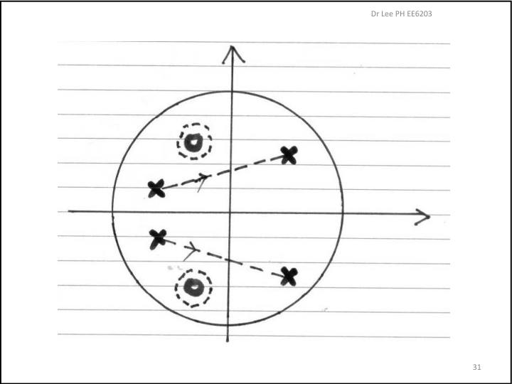
Check · pole placement
\(\mathbf A=\begin{bmatrix}0&1\\-0.3&1.2\end{bmatrix},\;\mathbf B=\begin{bmatrix}0\\1\end{bmatrix}\). Place the poles at 0.5 and 0.4.
\(k_1\)
\(\alpha_C=z^2-0.9z+0.2\), and the plant has \(a_0=0.3,\;a_1=-1.2\).
\(k_2\)
\(\alpha_1-a_1\).
Ackermann: double integrator with \(T=1\), so \(\mathbf A=\begin{bmatrix}1&1\\0&1\end{bmatrix},\;\mathbf B=\begin{bmatrix}0.5\\1\end{bmatrix}\), both poles at 0.5.
\(k_1\)
\(\mathbf W_C=\begin{bmatrix}0.5&1.5\\1&1\end{bmatrix}\), and the last row of \(\mathbf W_C^{-1}\) is \([1\;\,-0.5]\). Use \(\alpha_C(\mathbf A)=\mathbf A^2-\mathbf A+0.25\mathbf I\).
\(k_2\)
Second column: \(1\cdot1+(-0.5)\cdot0.25\).
State feedback \(u=-\mathbf K\mathbf x+r\) changes:
- poles and zeros
- zeros only
- poles only (zeros stay)
§11.1.
10 · Deadbeat control Lect 3 §13, slides 45–62
The solution of the closed loop is \(\mathbf x(k)=(\mathbf A-\mathbf B\mathbf K)^k\mathbf x(0)\). Stability needs every \(|\lambda_i|\lt1\). Deadbeat takes the extreme choice: put every closed-loop pole at \(z=0\) (13.1). Then \(\alpha_C(z)=z^n\), so Cayley–Hamilton gives \((\mathbf A-\mathbf B\mathbf K)^n=\mathbf 0\): the matrix is nilpotent. As a result,
\[\mathbf x(k)=\mathbf 0\text{ for all }k\ge n,\text{ from any }\mathbf x(0).\]The state reaches rest in at most \(n\) samples, so the settling time is at most \(nT\). This only exists in discrete time; no continuous pole location does it.
Or by Method 1: in CCF, \(k_{i+1}=0-a_i=-a_i\) (Example 3.13: \(\mathbf K=[-0.5\;\,-0.2\;\;1.1]\)).
Lecture example 3.12: double integrator
\(\mathbf A=\begin{bmatrix}1&T\\0&1\end{bmatrix},\;\mathbf B=\begin{bmatrix}T^2/2\\T\end{bmatrix}\). This gives \(\mathbf K=\left[\dfrac1{T^2}\;\;\dfrac3{2T}\right]\) and \(\mathbf A-\mathbf B\mathbf K=\begin{bmatrix}1/2&T/4\\-1/T&-1/2\end{bmatrix}\), whose square is \(\mathbf 0\). From \(\mathbf x(0)=[1\;1]^{\mathsf T}\): \(u(0)=-\left(\frac1{T^2}+\frac3{2T}\right)\) and \(u(1)=\frac1{T^2}+\frac1{2T}\).
LPH (slide 58): a smaller \(T\) settles faster (\(\le2T\)) but needs larger \(|u|\). Choose \(T\) to satisfy the sampling theorem while keeping \(u\) within actuator limits. The table on slide 56 has \(T=2,1,0.5\) giving \(u(0)=-1,-2.5,-7\).
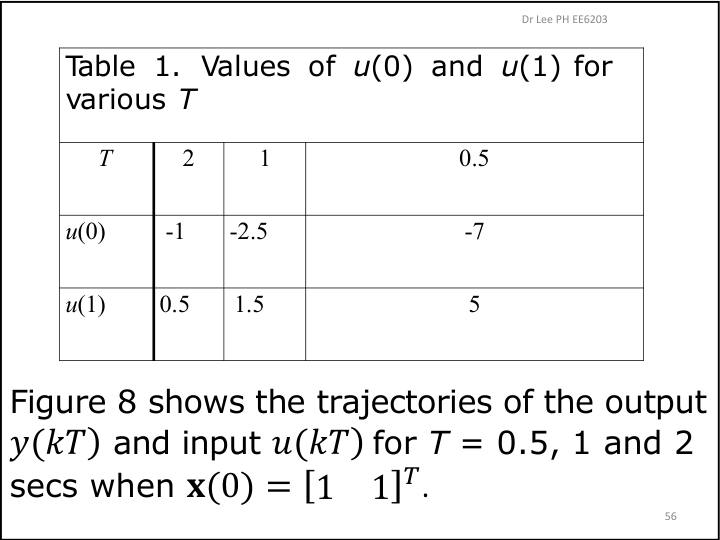
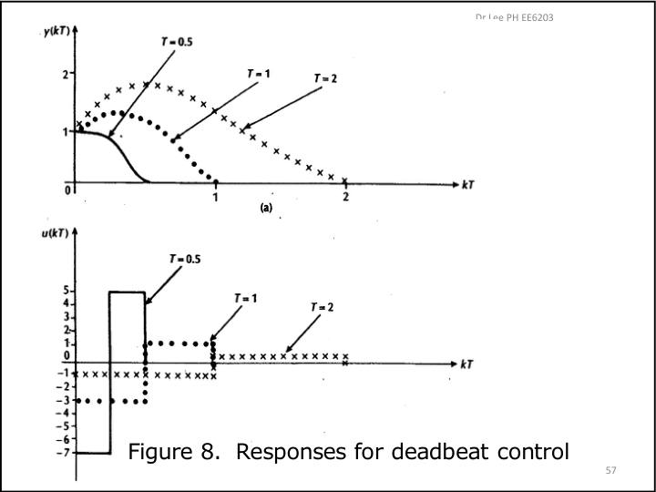
Worked: deadbeat from scratch
\(\mathbf A=\begin{bmatrix}1&1\\0&0.5\end{bmatrix},\;\mathbf B=\begin{bmatrix}0\\1\end{bmatrix},\;\mathbf x(0)=[1\;1]^{\mathsf T}\).
Step 1: controllability and \(\mathbf W_C^{-1}\)
\(\mathbf{AB}=[1\;\;0.5]^{\mathsf T}\), so \(\mathbf W_C=\begin{bmatrix}0&1\\1&0.5\end{bmatrix}\) with \(\det=-1\). Then \(\mathbf W_C^{-1}=\begin{bmatrix}-0.5&1\\1&0\end{bmatrix}\), whose last row is \([1\;\;0]\).Step 2: \(\mathbf A^2\) and \(\mathbf K\)
\(\mathbf A^2=\begin{bmatrix}1&1.5\\0&0.25\end{bmatrix}\), so \(\mathbf K=[1\;\;0]\mathbf A^2=[1\;\;1.5]\).Step 3: verify by iterating (past sittings asked for this)
\(\mathbf A-\mathbf B\mathbf K=\begin{bmatrix}1&1\\-1&-1\end{bmatrix}\), with trace 0 and det 0, so \(\alpha=z^2\) ✓. \(u(0)=-\mathbf K\mathbf x(0)=-2.5\) and \(\mathbf x(1)=[2\;\,-2]^{\mathsf T}\). Then \(u(1)=-\mathbf K\mathbf x(1)=1\) and \(\mathbf x(2)=[0\;\;0]^{\mathsf T}\) ✓, which stays at zero.Pitfalls. (1) The sign: LPH uses \(u=-\mathbf K\mathbf x\), so \(\mathbf A-\mathbf B\mathbf K\). (2) \(\mathbf A^n\) is the original plant \(\mathbf A\) raised to \(n\), not \(\mathbf A-\mathbf B\mathbf K\). (3) Fractional gains are normal: two 2026 sitters who got a fractional \(\mathbf K\) doubted themselves. Verify by checking that the trace and determinant of \(\mathbf A-\mathbf B\mathbf K\) are both 0, then trust it.
Check · deadbeat
\(\mathbf A=\begin{bmatrix}1&0.5\\0&2\end{bmatrix},\;\mathbf B=\begin{bmatrix}1\\1\end{bmatrix}\).
\(k_1\) of the deadbeat gain
\(\mathbf W_C=\begin{bmatrix}1&1.5\\1&2\end{bmatrix}\) (det 0.5), the last row of \(\mathbf W_C^{-1}\) is \([-2\;\;2]\), and \(\mathbf A^2=\begin{bmatrix}1&1.5\\0&4\end{bmatrix}\).
\(k_2\)
\(-2\cdot1.5+2\cdot4\).
With \(\mathbf x(0)=[2\;\;0]^{\mathsf T}\), find \(x_1(1)\).
\(\mathbf x(1)=(\mathbf A-\mathbf B\mathbf K)\mathbf x(0)\).
Same start: find \(u(0)\).
\(-\mathbf K\mathbf x(0)\).
A 3rd-order deadbeat loop with \(T=0.2\) s: what is the maximum settling time in seconds?
At most \(n\) samples.
Example 3.12 with \(T=0.5\) and \(\mathbf x(0)=[1\;1]^{\mathsf T}\): find \(u(0)\).
\(-(1/T^2+3/(2T))\).
11 · Quiz-shaped drill and formula recall
This drill has three linked questions in the shape past sittings reported (unofficial; see quizzes/quiz-02-intel.md). The numbers are new. Work each part on paper first, then enter the result. An older timed practice paper exists at quiz-02-prediction-paper.html. It predates the confirmed rules: it is one 25-mark question and lacks a Q1 modelling part, so treat it as extra practice, not as the quiz shape.
Q1 · Modelling
A motor obeys \(4\ddot y+2\dot y=8u\). Take \(x_1=y,\;x_2=\dot y\).
Q1 checks
(a) \(a_{22}\)
Normalise: \(\ddot y=-0.5\dot y+2u\).
(b) \(Y(s)/U(s)=\dfrac{K}{s(s+0.5)}\). Find \(K\).
\(\mathbf C\operatorname{adj}(s\mathbf I-\mathbf A)\mathbf B\) with \(\det=s(s+0.5)\).
Q2 · ZOH discretisation and controllability
\(\dot{\mathbf x}=\begin{bmatrix}-1&\gamma\\0&-2\end{bmatrix}\mathbf x+\begin{bmatrix}0\\1\end{bmatrix}u,\;y=[1\;\;0]\mathbf x\), sampled with a ZOH at \(T=\ln2\) s (so \(e^{-T}=\tfrac12\)).
Method reminder
\((s\mathbf I-\mathbf A)^{-1}=\begin{bmatrix}\frac1{s+1}&\frac{\gamma}{(s+1)(s+2)}\\0&\frac1{s+2}\end{bmatrix}\), and \(\frac{\gamma}{(s+1)(s+2)}\to\gamma(e^{-t}-e^{-2t})\). So \[\mathbf\Phi(T)=\begin{bmatrix}\tfrac12&\tfrac{\gamma}4\\0&\tfrac14\end{bmatrix},\qquad \mathbf\Theta(T)=\int_0^T\begin{bmatrix}\gamma(e^{-\tau}-e^{-2\tau})\\e^{-2\tau}\end{bmatrix}d\tau=\begin{bmatrix}\gamma/8\\3/8\end{bmatrix}.\]Q2 checks
(a) With \(\gamma=2\): \(\Phi_{12}\)
\(\gamma(e^{-T}-e^{-2T})=\gamma(\tfrac12-\tfrac14)\).
(a) With \(\gamma=2\): \(\Theta_1\)
\(\gamma\left[(1-e^{-T})-\tfrac12(1-e^{-2T})\right]\).
(b) With \(\gamma=2\): \(\det\mathbf W_C\) of the discrete model
\(\mathbf\Phi\mathbf\Theta=[\tfrac{5\gamma}{32}\;\;\tfrac3{32}]^{\mathsf T}\).
(c) The discrete transfer function is \(\dfrac{\gamma}{8}\dfrac{z-z_0}{(z-\frac12)(z-\frac14)}\). Find the zero \(z_0\).
Combine \(\frac{\gamma/8}{z-1/2}+\frac{(\gamma/4)(3/8)}{(z-1/2)(z-1/4)}\).
Q3 · Deadbeat on the Q2 model (\(\gamma=2\))
\(\mathbf x(k+1)=\begin{bmatrix}\tfrac12&\tfrac12\\0&\tfrac14\end{bmatrix}\mathbf x(k)+\begin{bmatrix}\tfrac14\\\tfrac38\end{bmatrix}u(k)\), with \(\mathbf x(0)=[1\;\;1]^{\mathsf T}\).
Q3 checks
(a) \(k_1\)
\(\mathbf W_C=\begin{bmatrix}1/4&5/16\\3/8&3/32\end{bmatrix}\), \(\det=-3/32\). Its last row of the inverse is \(\frac{1}{-3/32}[-\tfrac38\;\;\tfrac14]=[4\;\;-\tfrac83]\). And \(\mathbf A^2=\begin{bmatrix}1/4&3/8\\0&1/16\end{bmatrix}\).
(a) \(k_2\) (fraction allowed)
\(4\cdot\tfrac38-\tfrac83\cdot\tfrac1{16}\).
(b) \(u(0)\)
\(-\mathbf K\mathbf x(0)\).
(b) \(x_1(1)\)
\((\mathbf A-\mathbf B\mathbf K)\mathbf x(0)\).
(b) \(x_2(1)\)
\(-\tfrac38-\tfrac14\).
Formula recall (no formula sheet on the day)
Say or write each formula before opening it.
Transfer function from state space
\(G=\mathbf C(z\mathbf I-\mathbf A)^{-1}\mathbf B+D\) (same with \(s\)). Poles = eigenvalues of \(\mathbf A\).Continuous state transition matrix
\(\mathbf\Phi(t)=\mathcal L^{-1}\{(s\mathbf I-\mathbf A)^{-1}\}\).ZOH discretisation
\(\mathbf A_d=\mathbf\Phi(T)\), \(\mathbf B_d=\mathbf\Theta(T)=\left[\int_0^T\mathbf\Phi(\tau)d\tau\right]\mathbf B\), \(\mathbf C,D\) unchanged.Discrete state transition
\(\mathbf x(k)=\mathbf A^k\mathbf x(0)+\sum_{i=0}^{k-1}\mathbf A^{k-1-i}\mathbf Bu(i)\).Zeros
\(\det\begin{bmatrix}z_0\mathbf I-\mathbf A&-\mathbf B\\\mathbf C&D\end{bmatrix}=0\).Similarity transformation
\(\mathbf x=\mathbf P\mathbf w\): \(\mathbf P^{-1}\mathbf A\mathbf P,\;\mathbf P^{-1}\mathbf B,\;\mathbf C\mathbf P\). For CCF, \(\mathbf P=\mathbf W_C\tilde{\mathbf W}_C^{-1}\).CCF / OCF
CCF: superdiagonal 1s, last row \(-a_0,\dots,-a_{n-1}\), \(\mathbf B=[0\cdots1]^{\mathsf T}\), \(\mathbf C=[b_0\cdots b_{n-1}]\). OCF = the transpose structure: \(\mathbf A_O=\mathbf A_C^{\mathsf T}\), \(\mathbf B_O=\mathbf C_C^{\mathsf T}\), \(\mathbf C_O=[0\cdots1]\).Controllability / observability
\(\mathbf W_C=[\mathbf B\;\mathbf{AB}\cdots\mathbf A^{n-1}\mathbf B]\) and \(\mathbf W_O=[\mathbf C;\mathbf{CA};\dots;\mathbf{CA}^{n-1}]\). Each property holds iff the matrix has rank \(n\).Pole placement (CCF shortcut)
\(u=-\mathbf K\mathbf x\), \(\det(z\mathbf I-\mathbf A+\mathbf B\mathbf K)=\alpha_C(z)\). In CCF, \(k_{i+1}=\alpha_i-a_i\).Ackermann / deadbeat
\(\mathbf K=[0\cdots0\;1]\mathbf W_C^{-1}\alpha_C(\mathbf A)\). For deadbeat, \(\alpha_C(\mathbf A)=\mathbf A^n\) and \(\mathbf x(k)=\mathbf 0\) for \(k\ge n\).Two facts people forget
(1) Sampling with \(\omega T=k\pi\) loses controllability/observability of an oscillator. (2) State feedback does not move zeros; a pole on a zero gives an unobservable closed loop.Sources: resources/lph-lecture-0{1,2,3}-*.pdf, lph-lecture-01-slide-40-theta-note.pdf, lph-matrix-basics-summary.pdf, week-05/06/07-transcript.txt, quizzes/quiz-02-intel.md. Lecture example numbers follow the slides; all other examples are original and are verified by notes/quiz2-prep-learning-check.py. “Supplementary” boxes and intuition notes are additions, not slide content.